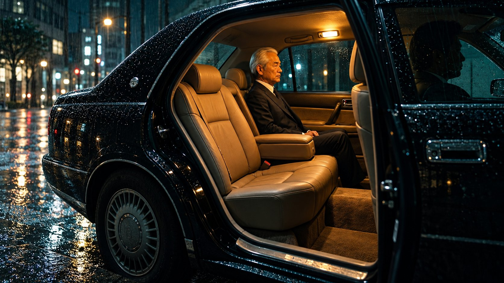
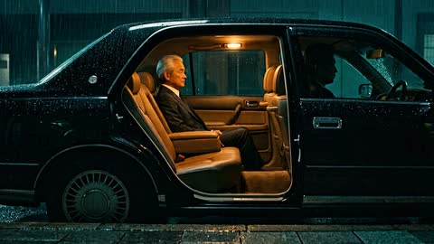
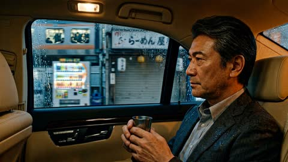

SHOT 01 · nw_b1562
The open sedan door
“Its rear door stands open: warm amber light, leather.”

Selected option 2 · Open full-size image ↗
Surrounding frames


Prompt & references
Create one horizontal 16:9 photorealistic film still for Nobody's Witness at beat nw_b1562. Use both neighbouring reference images for the same rain-soaked black sedan, beige leather interior and warm amber cabin light. Show a distinct closer three-quarter view from the wet pavement of the open rear door and the inviting empty seat nearest the door. The same silver-haired older Japanese man in a dark suit remains quietly seated on the far side, as in the first reference; the driver is only a dim silhouette. Match the real car's black bodywork, rain droplets, leather and lighting. Ishida has not yet entered this shot; do not add another person beside the car. Restrained Tokyo-noir photographic realism, natural proportions, no captions, titles, readable added text, logos or watermark. A complete wide landscape frame, not a square or a tight crop.
- Preceding shared still:
/film/img/s94/139-only-tea.jpg - Following still:
/film/img/s94/140-where-are-we-going.jpg